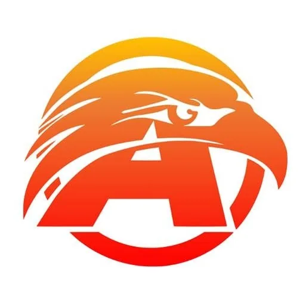

USeP AGILab TBI (Advancing Great Ideas Laboratory)
University of Southeastern Philippines (USeP) · Region XI
USeP AGILab TBI (Advancing Great Ideas Laboratory) is the Technology Business Incubator (TBI) of the University of Southeastern Philippines (USeP), located in Davao City in Mindanao (Region XI). As USeP's flagship innovation and entrepreneurship hub, AGILab supports technology startups and student innovators in one of the Philippines' fastest-growing regional innovation ecosystems.
- Category
- Technology Business Incubator
- Host institution
- University of Southeastern Philippines (USeP)
- City
- Davao City
- Region
- Region XI
- Operating status
- Operating
About the Center
AGILab's banner research focus on IoT (Internet of Things) for Industrial Technologies reflects Davao Region's strategic position as Mindanao's commercial and industrial center. The center's programs support tech entrepreneurs building applied IoT solutions for agriculture, manufacturing, logistics, and industrial operations in Region XI and the broader Mindanao context.
Programs & Services
- Startup incubation with specialization in IoT and industrial technology applications
- Business development support: business model canvas, market validation, customer discovery, and pitch coaching
- Mentoring and coaching from USeP faculty and industry practitioners in engineering, technology, and business
- IP and technology transfer guidance for student inventors and startup founders
- Access to DOST funding programs and demo day connections in the Davao Region innovation ecosystem
- Physical incubation space and lab access within the USeP campus in Mintal, Davao City
- Linkages to Davao City's tech startup community and industry partners in Region XI
Contact
Sources & references
- facebook.com/usepagilab
- usep.edu.ph/usep-profile
- sunstar.com.ph/davao/davaos-tech-biz-incubators-welcome-startups
Details are drawn from public records and the sources above, July 2026.
Startupreneur Innovation Hub · synced from the Notion catalog (July 2026) · status: published.